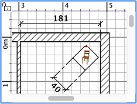

Para desenhar cotas, escolha Planta > Criar cotas ou seleccione a ferramenta
 Criar cotas.
Criar cotas.
Pode criar uma cota na planta usando qualquer um destes processos:
- Clique no ponto inicial da nova cota, clique no seu ponto final e clique uma terceira vez depois de ter movido o ponteiro
rato do para definir a distância da cota à peça.
- Mova o ponteiro do rato para o contorno de uma peça de mobiliário, ou para o lado da parede do lado da divisão
que quer medir, faça duplo clique para aceitar a cota temporária e clique uma terceira vez após ter
escolhido a distância à peça.
Em ambos os casos, a nova cota será colocada em cima do objecto se não mover o ponteiro do rato entre o 2º e o 3º
clique.
Pode pressionar Esc a qualquer momento para cancelar a criação da cota.
Ao escolher o ponto final duma nova cota, cada movimento do rato é refletido imediatamente na planta, tanto no tamanho como no
valor mostrado.
 |
 |
Cota criada
sem distância à peça |
Cota criada
com distância à peça |
Para terminar a criação de cotas, escolha Planta > Seleccionar ou seleccione a ferramenta Seleccionar

|